Case study · App concept · 2025
A Headspace feature that helps people fall asleep, remember their dreams and explore their subconscious in a mindful way.
My role
Concept, personas, journey map, wireframes, interface and video (started with a partner, then my own version)
Timeline
7 weeks · Fall 2025
Course
Information Architecture 1, with Martha Rettig
Tools
Figma, After Effects, Google Suite
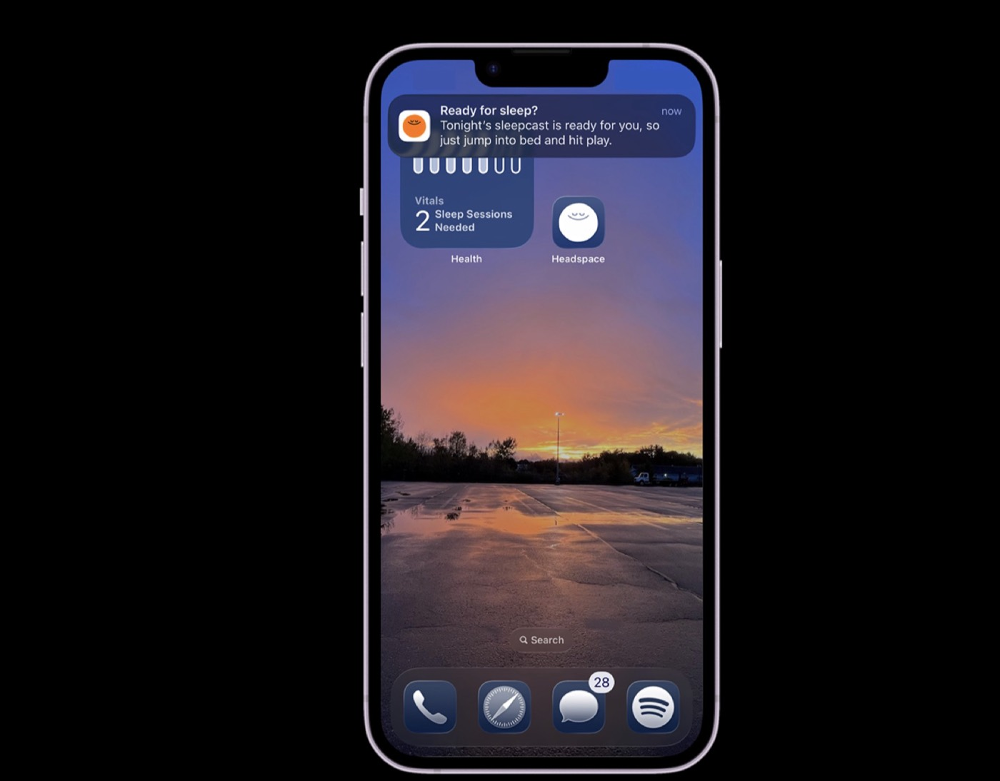
The brief
My partner and I started by exploring apps to build a feature for. We landed on dreams: an app that could help people fall asleep and remember their dreams more easily. I’ve always been fascinated by dreams, and I’ve even practiced lucid dreaming, so I loved the idea right away.
Our first pitch mixed Kindle with dream tracking. I’d never really used Kindle, so I made my own version inside Headspace, which already helps people with mindfulness and sleep. That became DreamCast.
Two personas kept me honest: one realistic, one from the dream world. They helped me think about how DreamCast could serve everyday users and still feel imaginative.
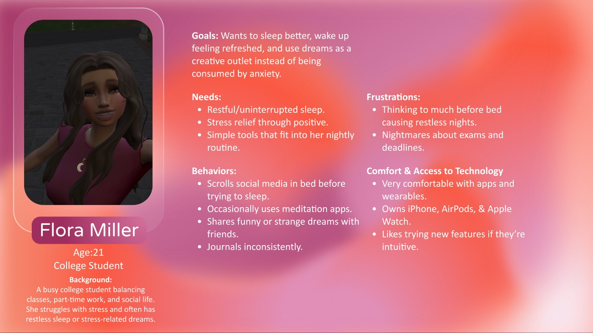
Flora Miller, 21, a college student balancing school stress and sleep. She wants to sleep better and use her dreams as a creative outlet.
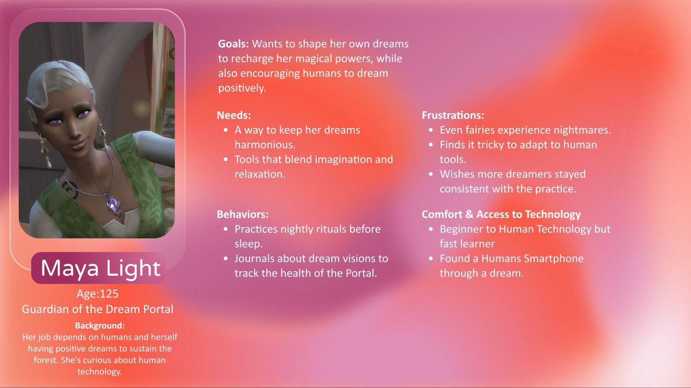
Maya Light, guardian of the Dream Portal, who guides people through the dream world. A playful second lens on the experience.
I had so many feature ideas that the happy path got crowded. Mapping Flora’s goals, actions and feelings, from scrolling in bed to waking up groggy, showed me which moments actually mattered.
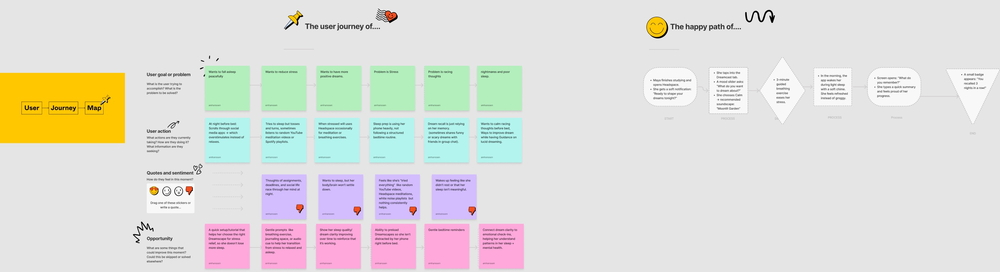
The journey map and happy path: Flora’s goals, actions, feelings and the opportunities DreamCast could answer.
My first wireframes were busy with ideas. Working in Figma, I cut the flow down to Flora’s night and made every screen feel like it belonged in Headspace.
Before
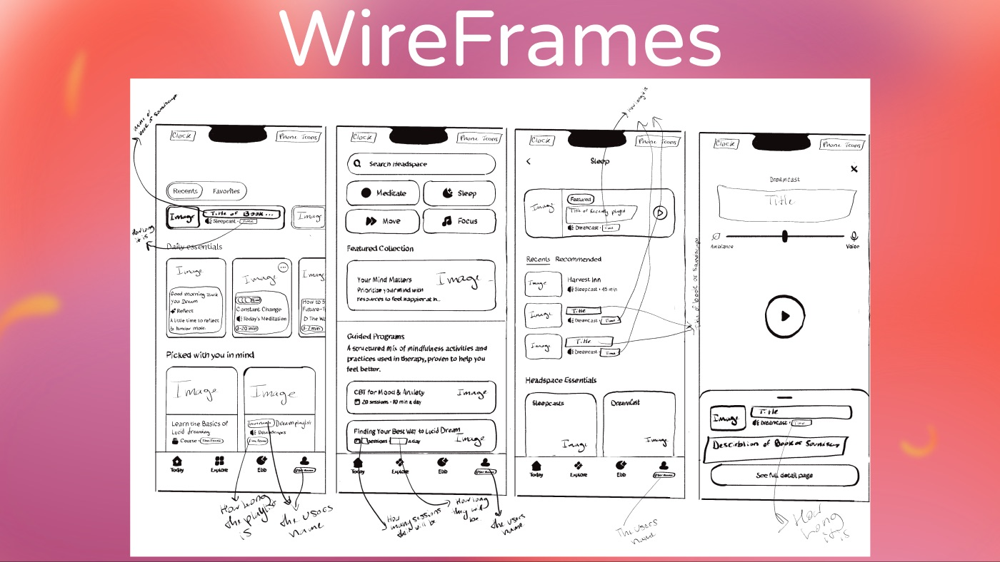
Week 3: hand-drawn wireframes for the home, player and dream log.
After
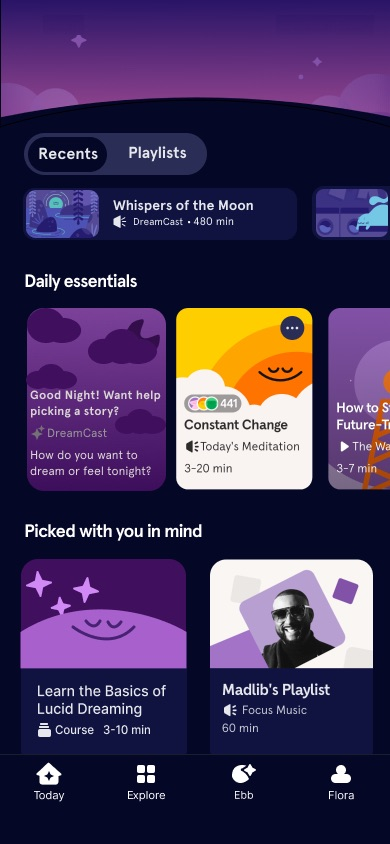
Week 7: the night home screen, with a DreamCast card that offers to help pick a story.
From a gentle reminder to falling asleep to a story.
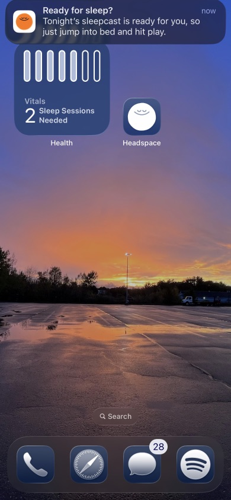
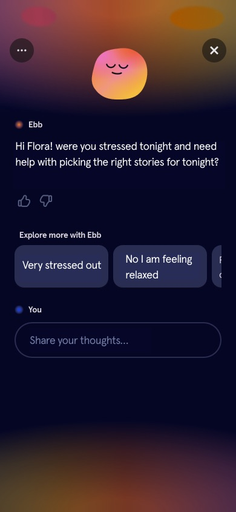
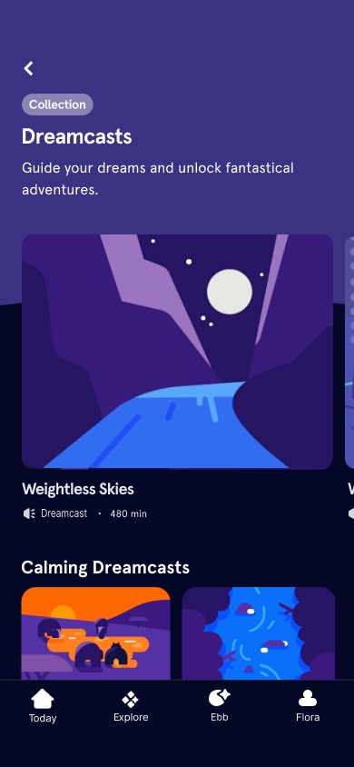
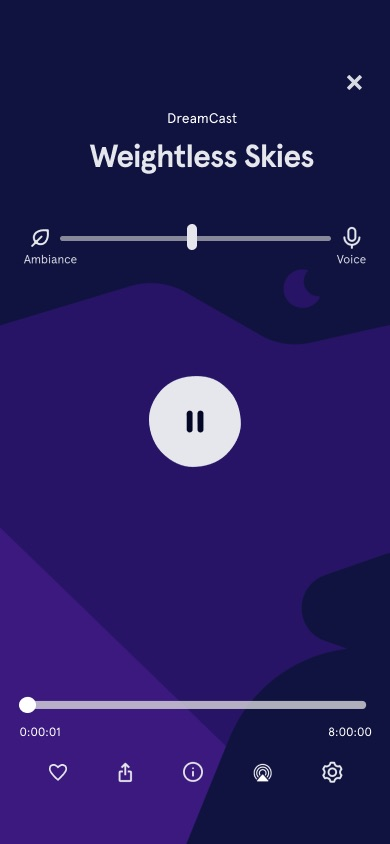
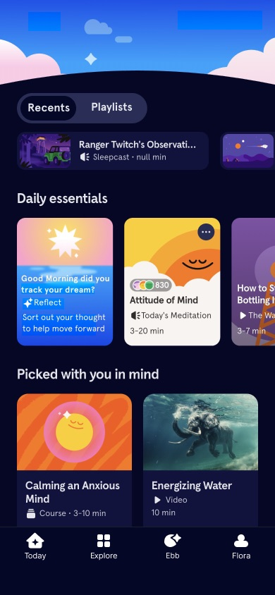
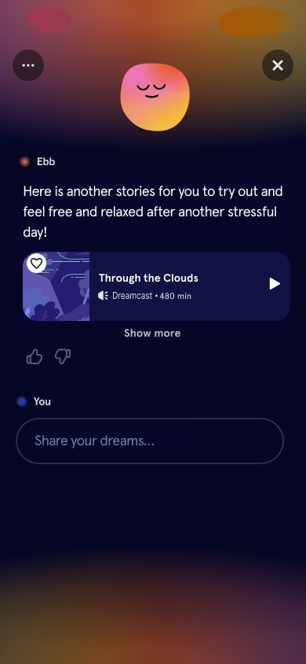
Process
Week 2
Explored apps with my partner and settled on dreams.
Week 3
Flora and Maya, user stories and first wireframes.
Week 4
Mapped the happy path and cut features down to Flora’s needs.
Week 5
Script, storyboards and a second interface draft that fits Headspace.
Weeks 6–7
Recorded flows, wrote narration, then polished pacing and transitions.
Reflection
“I learned how important it is to balance creativity with simplicity.”
What worked
Focusing on Flora. Once every feature had to support her night, the happy path got simpler and the app felt calmer.
What I learned
In motion, pacing is everything. My first video draft needed smoother transitions and a clearer link between visuals and narration.
Next time
I’d test the flow with real people who struggle with sleep, and see if the morning reflection actually helps them remember more.
Next project
Droplet →
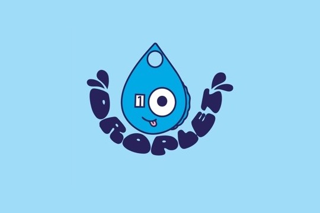